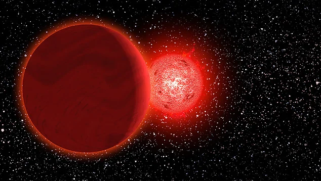

O que seria esse "segundo Sol"?
Algumas teorias afirmam que a NASA esconde informações sobre um segundo sol, que seria um corpo celeste massivo e luminoso, semelhante ao nosso Sol, mas que não é visível a olho nu. Acredita-se que esse segundo sol poderia ter efeitos significativos no clima da Terra e na vida humana.
Outras teorias sugerem que o segundo sol poderia ser uma estrela anã marrom ou um objeto astronômico desconhecido, e que a NASA estaria escondendo essa informação para evitar pânico ou desestabilização social.
Embora não haja evidências científicas concretas que apoiem a existência de um segundo sol, essa teoria continua a ser discutida e debatida por entusiastas da astronomia e teorias da conspiração.
É importante lembrar que teorias como essa muitas vezes carecem de fundamentos científicos e são baseadas em especulações ou interpretações errôneas de dados astronômicos. A comunidade científica geralmente rejeita essas teorias, enfatizando a importância de evidências sólidas e verificáveis na pesquisa astronômica.
O que é Nibiru / Planeta X?
Nibiru, também conhecido como Planeta X, é uma teoria que sugere a existência de um planeta desconhecido no nosso sistema solar, que teria uma órbita elíptica e longa, passando perto da Terra em intervalos regulares. Algumas versões dessa teoria afirmam que Nibiru causaria catástrofes globais ao se aproximar da Terra.
A ideia de Nibiru foi popularizada por algumas teorias da conspiração e pseudociências, mas não há evidências científicas que apoiem sua existência. Astrônomos e cientistas rejeitam essa teoria, afirmando que não há observações ou dados astronômicos que indiquem a presença de um planeta desconhecido com essas características.
Mas e as filmagens com “dois sóis”?
Muitos vídeos mostram dois discos luminosos no céu. Mas, na maioria dos casos, trata-se de:
- Reflexos ou distorções ópticas: Câmeras podem capturar reflexos de luz ou distorções atmosféricas que criam a ilusão de um segundo sol.
- Fenômenos atmosféricos: Como halos solares, que podem fazer com que o sol pareça ter um “irmão” próximo.
- Objetos celestes: Como planetas visíveis durante o dia, que podem ser confundidos com um segundo sol.
Esses fenômenos são bem documentados e explicados pela ciência, e não indicam a existência de um segundo sol real.
Por que essa teoria persiste?
A persistência dessa teoria pode ser atribuída a vários fatores:
- Desconfiança em instituições científicas: Muitas pessoas acreditam que agências como a NASA escondem informações importantes do público.
- Interesse por teorias da conspiração: A ideia de que algo grandioso está sendo ocultado atrai a imaginação e o interesse de muitas pessoas.
- Falta de compreensão científica: Conceitos astronômicos complexos podem ser mal interpretados, levando a conclusões erradas.
- Influência de mídias sociais: Vídeos e postagens que afirmam ter provas da existência de um segundo sol podem se espalhar rapidamente, reforçando a crença na teoria.
Embora a teoria do segundo sol seja intrigante, é importante lembrar que não há evidências científicas concretas que a apoiem. A comunidade científica continua a estudar o universo e a buscar novas descobertas, mas até agora, não há provas da existência de um segundo sol no nosso sistema solar.